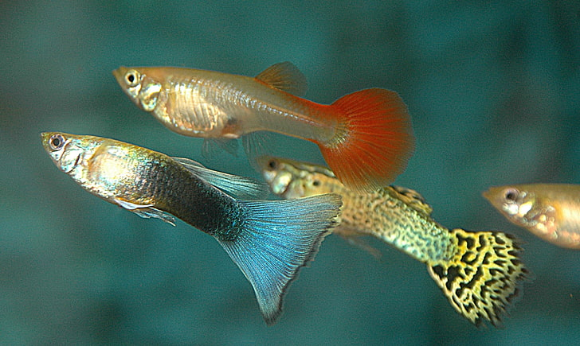

Ikan Guppy
Ikan Guppy adalah salah satu jenis ikan hias paling populer di Indonesia. Ikan ini berasal dari Amerika Selatan. Ikan Guppy memiliki bentuk tubuh seperti wanita yang mengenakan rok. Bentuknya juga menarik karena ikan ini memiliki ukuran yaitu kurang dari 2,5 cm jika diukur dari kepala ke ekor.
Ikan Guppy adalah ikan yang mudah beradaptasi di berbagai lingkungan. Hal inilah yang membuat ikan Guppy bisa tersebar luas hingga ke seluruh dunia.
Ekologi dan Reproduksi
Gupi adalah ikan yang sangat mudah berkembang biak[2]. Masa kehamilan ikan ini berkisar antara 21–30 hari (rata-rata 28 hari) bergantung pada suhu airnya. Suhu air yang paling cocok untuk berbiak adalah sekitar 27 °C (72 °F).
Alih-alih bertelur, ikan gupi mengandung dan melahirkan anaknya (livebearers). Setelah ikan betina dibuahi, daerah berwarna gelap di sekitar anus yang dikenal sebagai ‘bercak kehamilan’ (gravid spot) akan meluas dan bertambah gelap warnanya. Menjelang saat-saat kelahirannya, bintik-bintik mata anak-anak ikan dapat terlihat dari kulit perut induknya yang tipis dan menerawang. Seekor induk gupi dapat melahirkan burayak (anak ikan) antara 2–100 ekor pada setiap kelahiran, tetapi kebanyakan antara 5–30 ekor saja. Beberapa jam setelah persalinan, induk gupi telah siap untuk dibuahi lagi.
Begitu keluar dari perut induknya, anak-anak gupi telah mampu hidup sendiri. Berenang, mencari makanan, dan menghindari musuh-musuhnya. Anak-anak gupi ini umumnya akan terus bergabung dengan kelompoknya, dan dengan ikan-ikan lain yang lebih besar. Namun gupi yang telah dewasa tidak akan segan-segan memangsa burayak yang berukuran jauh lebih kecil; sehingga apabila dipelihara di akuarium, anak-anak ikan ini perlu dipisahkan dari ikan-ikan dewasa. Burayak-burayak ini, apabila selamat, akan mencapai kedewasaan pada umur satu atau dua bulan saja. Itulah sebabnya ikan ini dengan segera dapat melipat-gandakan jumlah anggota kelompoknya, sehingga dinamai juga ikan seribu.
Sirip dubur pada ikan jantan mengalami perubahan menjadi gonopodium, yang berfungsi untuk mengeluarkan sperma yang akan masuk pada tubuh ikan betina Gupi betina memiliki kemampuan untuk untuk menyimpan sperma, sehingga dapat hamil berulang kali dengan hanya satu kali kawin.
Faktor kunci keberhasilan yang lainnya adalah kemampuannya untuk menyesuaikan hidup dengan pelbagai kondisi perairan, dengan variasi makanan yang beragam. Analisis terhadap isi perut gupi yang hidup di Danau Buyan, Bali, menunjukkan bahwa ikan ini terutama memakan zooplankton yang melimpah di sana. Sementara gupi yang hidup di Danau Bratan dan Batur kebanyakan mengandalkan bahan-bahan organik yang berada di dasar danau. Gupi bahkan dapat hidup pada perairan dengan salinitas tinggi (air asin), hingga 150% salinitas normal air laut
Perawatan
Untuk ikan guppy ini kualitas air standarnya yaitu 68 ph hingga 72 ph nah kalau saya ada alat khusus yang menyesiaikan Ph tersebut. Pada dasarnya ikan guppy hidup di perairan tawar di daerah Amerika Selatan. Mereka banyak ditemukan di rawa-rawa atau aliran sungai. Nah, Anda bisa merancang aquarium yang sesuai dengan habitat asli mereka. Minimal, aquarium untuk ikan guppy harus memiliki sirkulasi dan arus air yang baik. Agar lebih menarik, aquarium juga bisa diisi berbagai jenis tanaman air guna menambah kadar oksigen di dalamnya.
Ikan guppy secara alami akan mencari air yang memiliki suhu hangat. Oleh karena itu, Anda membutuhkan water heater guna menjaga suhu air aquarium. Suhu ideal untuk ini berkisar pada 23-27 derajat Celcius. Pastikan juga agar suhunya tidak terlalu panas karena hal tersebut bisa membuat ikan guppy cepat lemas. Selain itu, Anda juga harus menjaga pH air antara 7-7,2. Tingkat keasaman ini adalah pH yang ideal untuk menjaga kesehatan jenis ikan ini. Pemberian pakan pada ikan guppy juga perlu diperhatikan dengan baik. Selain menggunakan cacing sutra atau microworm sebagai makanan sehat, Anda juga bisa sesekali memberikan pelet khusus ikan guppy yang ukurannya kecil. Hal yang terpenting adalah Anda harus rutin mengontrol pakannya. Anda pun tidak boleh terlalu banyak memberi pakan. Sisa-sisa pakan justru akan membuat kondisi air menjadi kotor dan memancing tumbuhnya mikroba serta parasit.
Salah satu penyebab kematian ikan guppy yang sering ditemukan adalah penyakit dan parasit. Bintik putih pada tubuh, bubuk berwarna emas di sekitar tubuh, sirip yang membusuk, dan fluke adalah penyakit yang sering menyerang guppy. Untuk mengobati penyakit tersebut, Anda bisa menggunakan obat-obatan anti-parasit yang banyak dijual di toko-toko ikan. Untuk aplikasinya, pisahkan dulu ikan yang sakit dengan yang sehat.